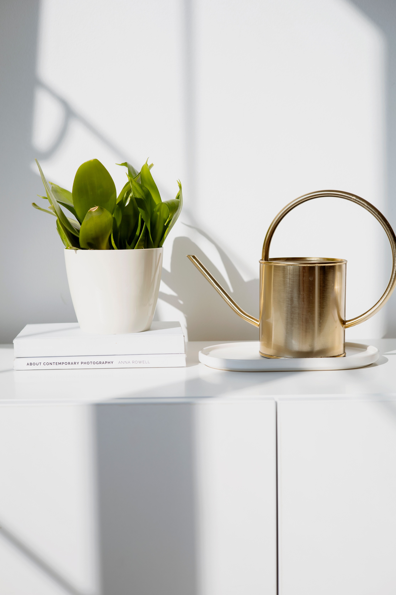
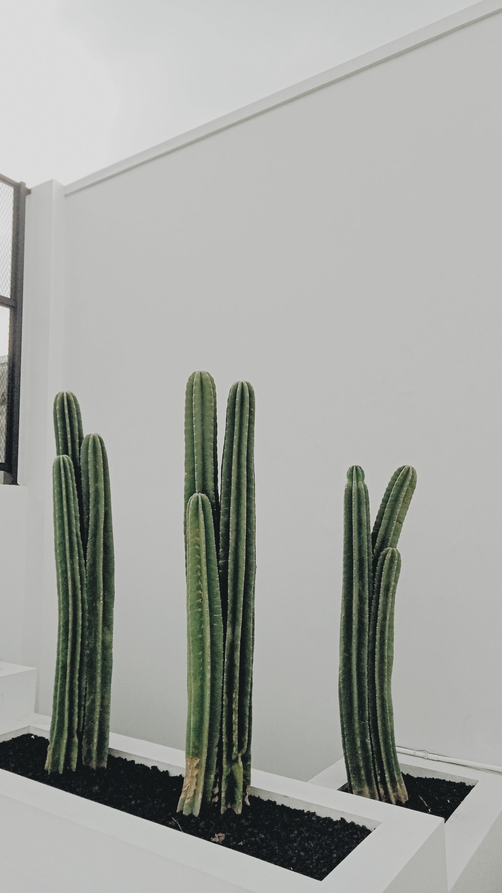
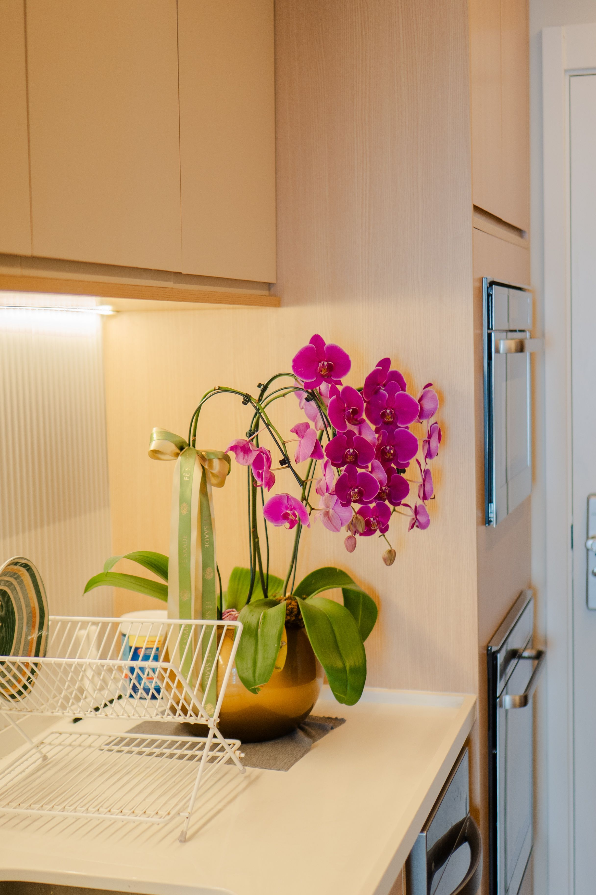

En este artículo
Introducción
Recolectar agua de lluvia puede ayudar a aprovechar mejor un recurso natural para tareas del jardín, siempre que el sistema se planifique con criterios de higiene, seguridad, capacidad y mantenimiento.
Antes de realizar cambios conviene observar el espacio, identificar sus condiciones reales y definir qué resultado se busca. Una planificación sencilla ayuda a evitar compras innecesarias, trabajos repetidos y soluciones difíciles de mantener.
Planificar el sistema antes de instalarlo
Antes de comprar depósitos o conectar canalones conviene observar cómo recibe lluvia la vivienda, qué superficie de cubierta puede utilizarse y para qué se pretende aprovechar el agua. Esa evaluación evita dimensionar el sistema por intuición. Un jardín pequeño con macetas tiene necesidades distintas de un terreno con césped, árboles y parterres. También importa la frecuencia de las lluvias: en zonas con periodos secos prolongados puede interesar almacenar más, mientras que en lugares lluviosos un depósito moderado puede llenarse con rapidez.
El punto de captación suele ser una cubierta conectada a canalones y bajantes. La cubierta debe mantenerse razonablemente limpia y no conviene asumir que toda agua recogida es potable. Para riego y determinados usos exteriores, la recolección puede resultar práctica, pero cualquier uso doméstico que implique consumo, preparación de alimentos o higiene requiere cumplir las normas sanitarias locales y un tratamiento apropiado.
Antes de instalar nada, revisa además dónde podrá colocarse el depósito. Una base firme, nivelada y capaz de soportar el peso del recipiente lleno es esencial. Un litro de agua pesa aproximadamente un kilogramo, de modo que incluso un depósito doméstico puede ejercer una carga considerable.
Además de los criterios principales, conviene avanzar por etapas. Primero observa el espacio durante varios días y anota los problemas que realmente aparecen. Después establece prioridades: seguridad y funcionamiento deben resolverse antes que la decoración. Este orden evita invertir tiempo en detalles que más tarde tengan que modificarse.
También es útil trabajar con un presupuesto aproximado. No hace falta comprar todo al mismo tiempo. Separar el proyecto en fases permite comparar materiales, reutilizar elementos que ya existen y comprobar si las primeras decisiones funcionan. Cuando una solución exige mantenimiento periódico, anótalo desde el principio para valorar si encaja con la rutina de la casa.
Las condiciones ambientales cambian a lo largo del año. Luz, humedad, temperatura, viento y frecuencia de uso pueden transformar el comportamiento de un rincón doméstico o del jardín. Por eso una solución flexible suele ser más útil que una composición demasiado rígida. Observar, ajustar y mantener es parte del proyecto, no una señal de que el diseño inicial haya fallado.

Captación, filtrado y almacenamiento
Un sistema sencillo necesita conducir el agua desde la cubierta hasta el depósito reduciendo la entrada de hojas, insectos y sedimentos. Las rejillas en canalones, filtros en bajantes y dispositivos de primera descarga pueden mejorar la calidad del agua almacenada. La primera lluvia después de un periodo seco arrastra polvo y suciedad acumulados en el tejado; separar esa fracción ayuda a que menos residuos lleguen al depósito.
El recipiente debe permanecer cerrado y protegido de la luz siempre que sea posible. Esto limita la proliferación de algas y dificulta la entrada de mosquitos. También necesita un rebosadero que conduzca el exceso de agua hacia un lugar seguro cuando se llena. Ese punto suele olvidarse, pero es fundamental: una tormenta intensa puede llenar rápidamente el depósito y el agua sobrante no debería terminar junto a cimientos, puertas o zonas donde cause erosión.
Para extraer el agua se puede instalar un grifo elevado, una conexión para manguera o, en sistemas mayores, una bomba adecuada. Dejar el grifo ligeramente por encima del fondo evita extraer parte de los sedimentos depositados. Si el agua se utiliza para regar, hacerlo cerca del suelo y en las horas más frescas también mejora su aprovechamiento.
La elección de materiales debe responder al lugar donde se utilizarán. En exteriores interesa comprobar resistencia a humedad, radiación solar y cambios de temperatura; en interiores pesan más la limpieza, el desgaste y la convivencia con el resto del mobiliario. Leer las instrucciones del fabricante evita aplicar tratamientos incompatibles.
Cuando sea posible, prioriza elementos reparables y fáciles de mantener. Una pieza sencilla que pueda limpiarse, ajustarse o sustituirse parcialmente suele ofrecer una vida útil más larga que otra cuya reparación sea complicada. Esto también ayuda a controlar el gasto a medio plazo.
La escala es otro aspecto esencial. Antes de comprar, mide y representa el objeto con cinta de pintor, cartón o marcas temporales. Esta prueba permite visualizar cuánto espacio ocupará realmente y cómo afectará a la circulación. En jardines, considera además el crecimiento futuro de las plantas; en interiores, abre puertas, cajones y sillas para comprobar que todo pueda utilizarse sin obstáculos.
Mantenimiento y uso responsable
Recolectar agua no significa instalar un depósito y olvidarlo. Los canalones deben revisarse, especialmente después de temporales o épocas de caída de hojas. Los filtros necesitan limpieza periódica y el depósito debe inspeccionarse para detectar fugas, tapas mal cerradas, acumulación excesiva de sedimentos o presencia de insectos.

Conviene observar también el aspecto y olor del agua. Si el sistema ha permanecido mucho tiempo sin uso o existe contaminación evidente, no debe utilizarse de forma indiscriminada. En el jardín, priorizar riego directo al suelo permite aprovechar el recurso con eficiencia. El acolchado alrededor de las plantas ayuda además a conservar la humedad y reduce la frecuencia de riego.
La seguridad es especialmente importante en hogares con niños o animales. Los depósitos deben ser estables, permanecer cerrados y no ofrecer acceso accidental al interior. Las conexiones y rebosaderos también tienen que quedar firmes. Un sistema modesto, bien mantenido y adaptado a las necesidades reales suele ser preferible a una instalación grande que después resulte difícil de cuidar.
El mantenimiento funciona mejor cuando se convierte en una rutina breve. Una revisión semanal o quincenal puede detectar suciedad, humedad, piezas flojas, hojas secas o pequeños daños antes de que se agraven. No todas las tareas deben hacerse con la misma frecuencia: conviene distinguir entre cuidados cotidianos, revisiones mensuales y trabajos estacionales.
Documentar algunos cambios también resulta útil. Una fotografía tomada al inicio permite comparar la evolución de plantas, materiales y distribución. Si algo no funciona, esa referencia facilita identificar cuándo apareció el problema y qué modificación pudo influir.
Por último, evita buscar perfección inmediata. Los espacios domésticos y los jardines están vivos porque se usan. Las mejores soluciones son las que toleran cambios, pueden corregirse y siguen siendo cómodas con el paso del tiempo. Un proyecto bien cuidado puede evolucionar sin necesidad de empezar desde cero cada temporada.
Cómo poner en marcha el sistema paso a paso
Una forma prudente de empezar consiste en observar una lluvia real antes de comprar componentes. Comprueba por dónde baja el agua, si los canalones desbordan y dónde podría situarse el depósito sin dificultar el paso. Después mide aproximadamente la superficie de cubierta que alimentará la bajante y revisa los datos de precipitación de tu zona. Estas referencias ayudan a decidir si conviene un depósito pequeño, varios recipientes conectados o una solución de mayor capacidad.
Prepara una base sólida y completamente nivelada. El peso del agua aumenta rápidamente y un recipiente inclinado puede volverse inestable. Deja acceso suficiente alrededor para limpiar filtros, revisar conexiones y abrir la tapa cuando sea necesario. Si el depósito incorpora grifo, una pequeña elevación puede facilitar colocar una regadera debajo, siempre que la estructura utilizada esté diseñada para soportar la carga total.

Conecta la bajante utilizando piezas compatibles y coloca sistemas que retengan hojas y residuos gruesos. Un desviador de primera lluvia puede separar parte del agua inicial que arrastra suciedad de la cubierta. Después comprueba el rebosadero: debe tener capacidad para evacuar el exceso durante lluvias intensas y dirigirlo hacia un punto donde no provoque humedad junto a la vivienda ni erosione el terreno.
Durante las primeras lluvias observa todas las uniones. Una pequeña fuga puede parecer insignificante, pero también puede humedecer de forma constante una pared o vaciar parte del depósito. Ajusta las conexiones y verifica que las mallas permanezcan en su sitio. Mantén siempre cerrados los accesos para impedir la entrada de insectos, hojas y pequeños animales.
Integrar el agua recogida en el riego
El agua almacenada resulta especialmente útil cuando se combina con hábitos de riego eficientes. Regar directamente sobre el suelo, cerca de la zona radicular, reduce pérdidas innecesarias. Las primeras horas de la mañana suelen ofrecer condiciones favorables porque la evaporación es menor que en las horas de máximo calor. El acolchado también ayuda a conservar humedad y puede prolongar el tiempo entre riegos.
No todas las plantas necesitan la misma cantidad. Agrupar especies con requerimientos similares permite distribuir mejor el agua disponible. Las macetas pequeñas se secan con mayor rapidez que grandes masas de suelo, mientras que plantas recién establecidas pueden necesitar vigilancia adicional. Comprobar la humedad antes de regar evita gastar agua cuando el sustrato todavía conserva suficiente.
Si el depósito se vacía durante un periodo seco, no es un fracaso del sistema: significa que la reserva tiene un límite. El objetivo razonable es complementar otras fuentes y aprovechar una parte de las precipitaciones, no garantizar autonomía absoluta en cualquier circunstancia.
Revisión a lo largo del año
Antes de las temporadas de lluvia limpia canalones, rejillas y filtros. Después de tormentas fuertes comprueba que ramas y hojas no hayan bloqueado las entradas. En periodos prolongados sin precipitaciones, inspecciona el interior según las instrucciones del depósito y retira sedimentos cuando sea necesario.
También conviene revisar el entorno del recipiente. La base no debe hundirse ni inclinarse, y las conexiones no deberían soportar tensiones causadas por movimientos. Si el clima local incluye heladas, sigue las recomendaciones del fabricante para proteger depósito y tuberías. Con una revisión estacional sencilla, el sistema puede mantenerse funcional sin convertirse en una tarea complicada.
Preguntas frecuentes
¿Se puede beber el agua de lluvia almacenada?
No debe considerarse potable automáticamente. El agua recogida de una cubierta puede contener polvo, microorganismos y otros contaminantes. Para consumo humano se necesitan tratamientos apropiados y cumplir la normativa sanitaria local.
¿Qué tamaño debe tener el depósito?
Depende de la superficie de captación, las precipitaciones de la zona, el espacio disponible y el uso previsto. Es mejor dimensionarlo a partir de esas variables que elegirlo únicamente por capacidad.
¿Cómo evitar mosquitos en el depósito?
Mantén el recipiente completamente cerrado, protege entradas y rebosaderos con mallas adecuadas y revisa que no existan pequeñas acumulaciones de agua descubierta alrededor del sistema.
Conclusión
Elegir soluciones adecuadas, observar cómo responde el espacio y mantener una rutina sencilla permite obtener mejores resultados a largo plazo. En lugar de buscar cambios apresurados, conviene adaptar cada decisión a las condiciones reales de la vivienda o el jardín, al tiempo disponible y al mantenimiento que se puede asumir. Así, cómo crear un sistema de recolección de agua de lluvia se convierte en un proyecto práctico, ordenado y sostenible en el día a día.